Un défi humain
Vivre plusieurs semaines en équipage, gérer la fatigue, les imprévus et rester soudés sur la route.
Raid solidaire en Peugeot 205
Les Choucrouteurs, c'est l'histoire de trois amis d'enfance qui ont décidé de se lancer dans un projet humain, mécanique et solidaire : participer à l'Europ'Raid.
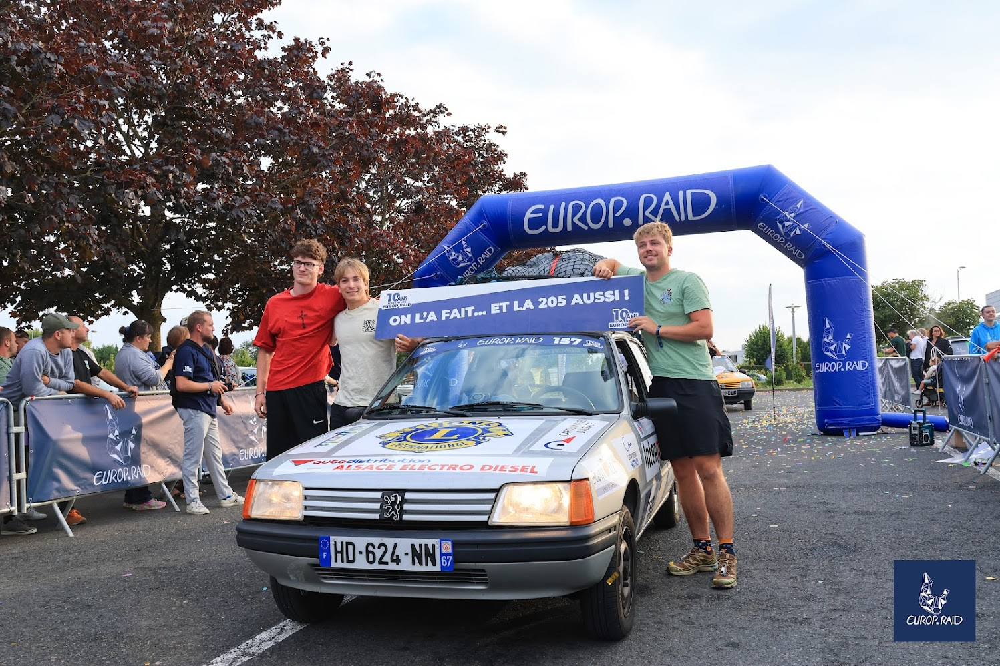
Notre histoire
L'aventure des Choucrouteurs, c'est avant tout une histoire d'amitié. Nous voulions construire un projet concret, utile et marquant, capable de nous faire sortir de notre quotidien tout en aidant des personnes qui en ont besoin.
Participer à l'Europ'Raid, c'était apprendre à monter une association, rechercher des partenaires, organiser une collecte, préparer une voiture et vivre une aventure collective jusqu'au bout.
Europ'Raid
L'Europ'Raid n'est pas une course de vitesse. C'est un raid culturel et humanitaire réalisé en Peugeot 205. Chaque équipage traverse l'Europe avec du matériel destiné à des écoles, associations et enfants défavorisés.
Vivre plusieurs semaines en équipage, gérer la fatigue, les imprévus et rester soudés sur la route.
Collecter, trier et transporter des fournitures utiles pour leur donner une vraie destination.
Traverser des pays, découvrir des paysages, rencontrer des habitants et voir l'Europe autrement.
Préparation
Création de l'association, budget, dossier de sponsoring et recherche de partenaires locaux.
Récupération des fournitures, tri, pesée, stockage et préparation des cartons avant le départ.
Itinéraire, papiers, outils, pièces de rechange, bivouac et sécurité pour rester autonomes.
Défi mécanique
Notre 205 avait besoin d'une vraie remise en état. Nous l'avons démontée, nettoyée, réparée et préparée pour supporter les longues étapes, les routes difficiles et le poids du matériel.
Cette préparation nous a appris la patience, la rigueur, la débrouille et l'importance du travail d'équipe.
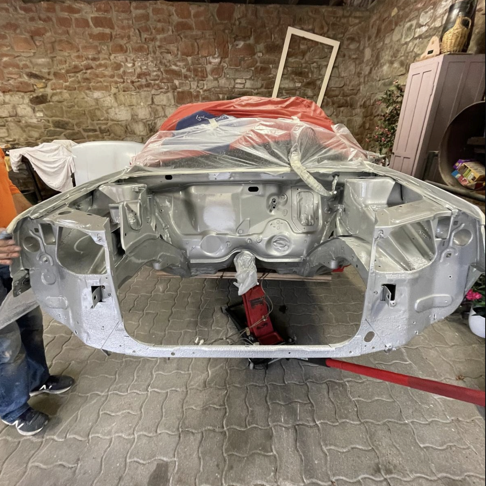
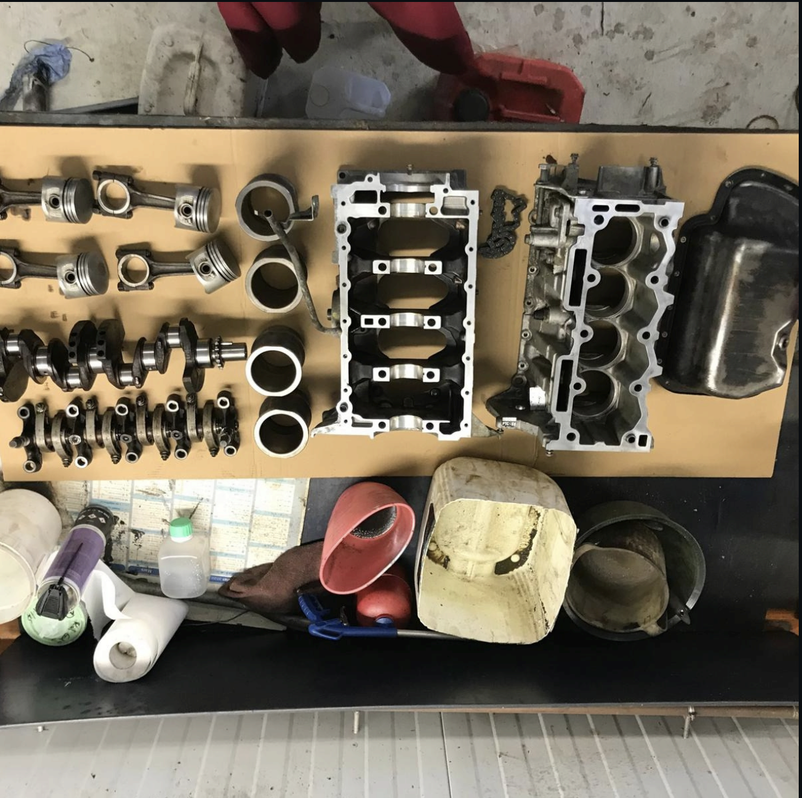
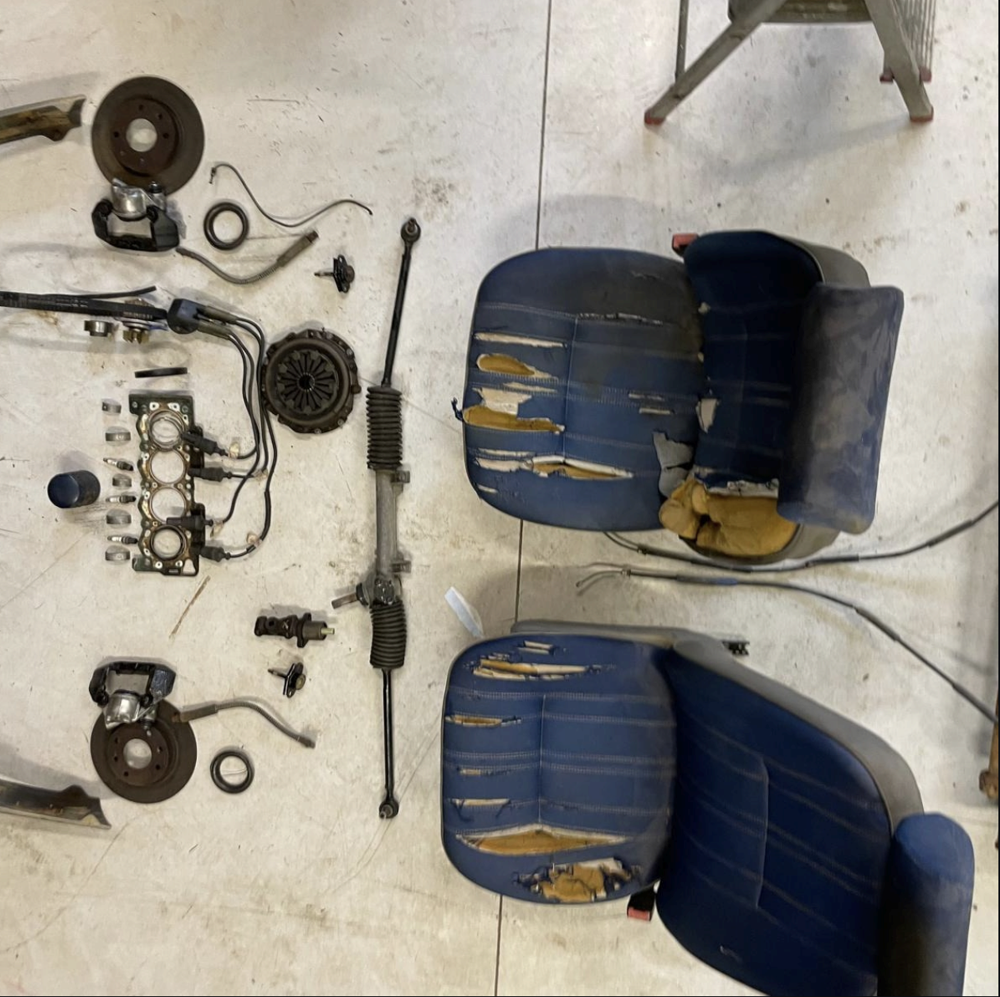
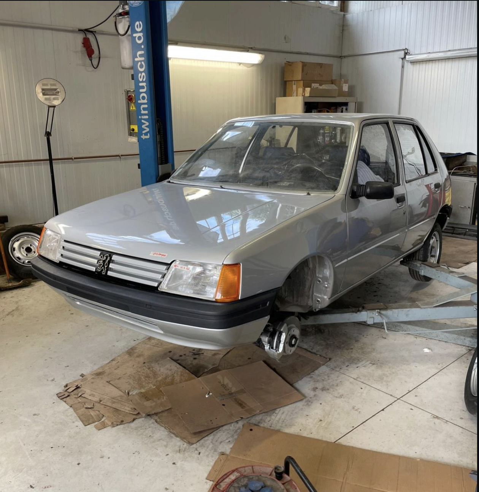
Ce que le projet apporte
Apprendre à gérer les problèmes avec les moyens du bord.
Porter un projet sérieux et tenir ses engagements.
Découvrir des cultures, des paysages et des réalités différentes.
Transformer une aventure personnelle en action utile.
“On part pour traverser l'Europe. On revient avec une équipe plus soudée, des rencontres plein la tête et la preuve qu'un projet ambitieux commence souvent par une décision simple : se lancer.”
Galerie photo
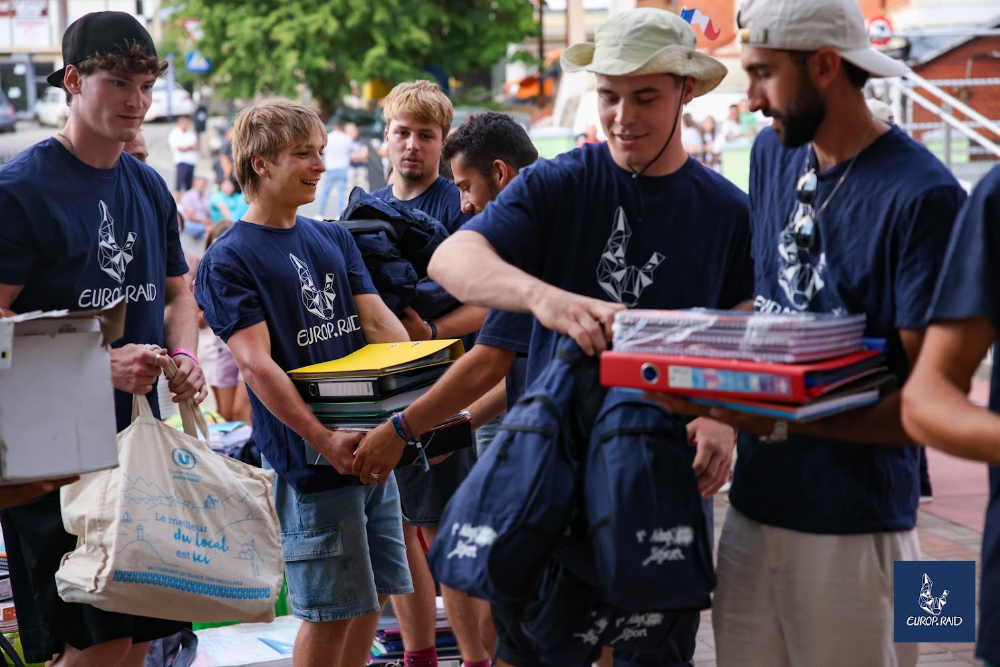
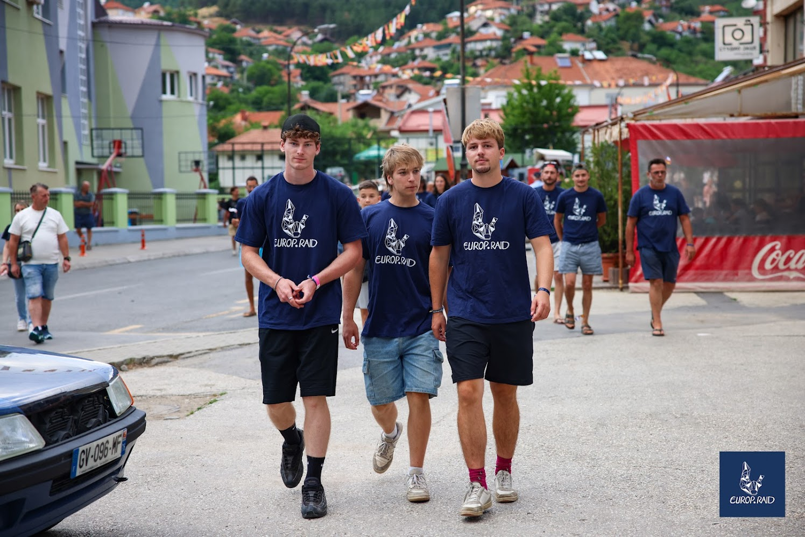
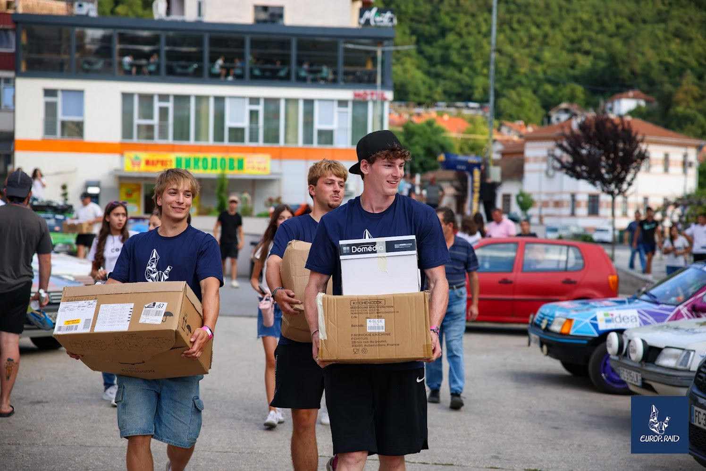
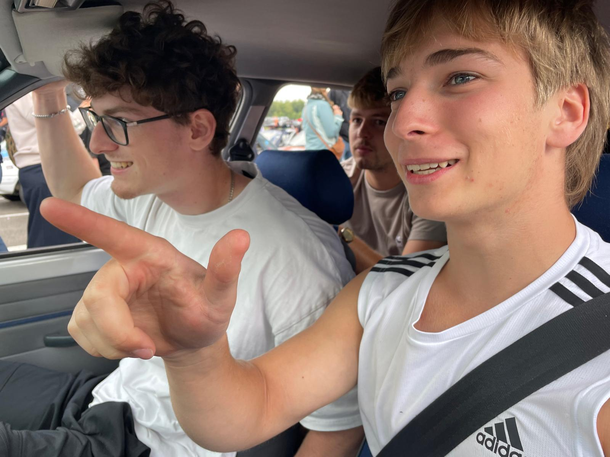
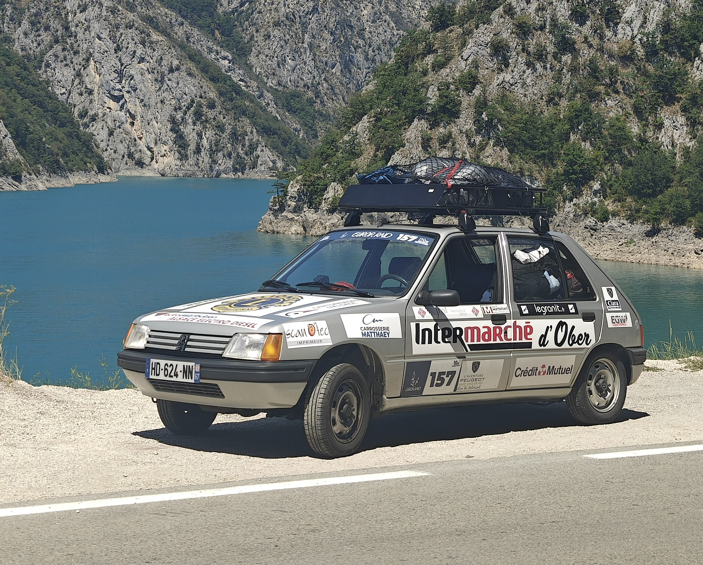
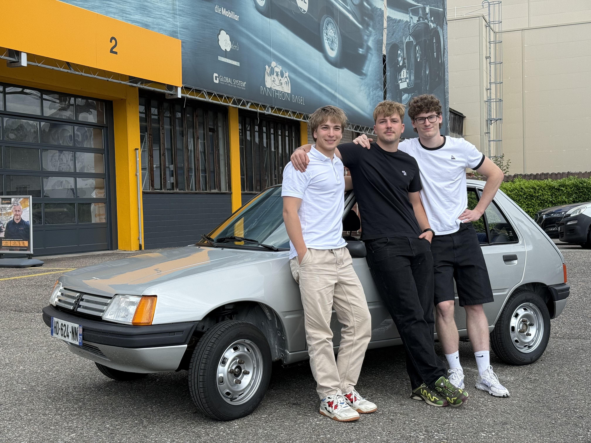